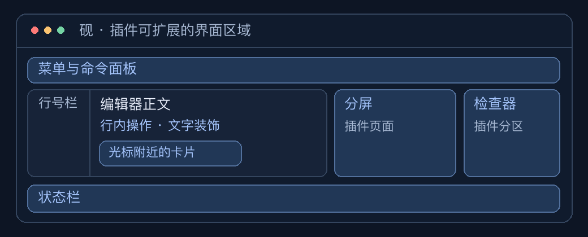
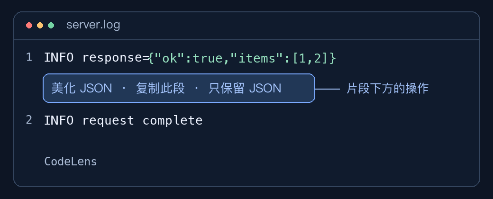
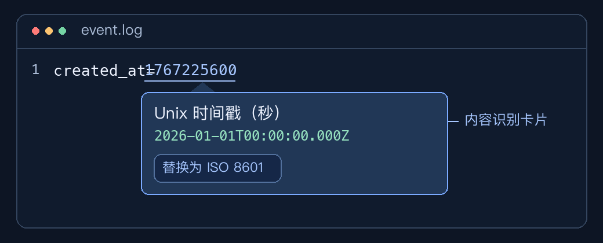

插件效果示例
这些图是根据现有示例插件绘制的界面示意。砚 1.0.4 及后续版本支持插件。

编辑器行内 · 文本片段助手

怎么触发 用纯文本打开日志，输入 INFO response={"ok":true,"items":[1,2]}。插件识别内嵌 JSON，在该行下方提供操作。点击「美化 JSON」只替换 JSON 片段，保留日志前缀。
能控制什么 languageFeatures 的 codeLens 可以指定位置、按钮文字、点击执行的命令及其参数。宿主负责文字和按钮的布局。下列返回值将一个操作放到片段所在行的下方。对应的 format 命令负责查找并美化片段。
return [{
line: 1,
below: true,
title: "美化 JSON",
command: "format"
}];
光标附近 · 时间戳识别卡片

怎么触发 用纯文本打开 created_at=1767225600，按住 ⌘ 并指向数字。宿主给识别范围加下划线，并在附近显示卡片。点击「替换为 ISO 8601」可以原地替换该范围。
能控制什么 inspect 提供者返回匹配范围、标题、内容、明细、色块和可用操作。宿主根据指针与窗口位置摆放卡片。
分屏与独立窗口 · JSON 可视化编辑器

怎么触发 打开包含非空对象数组的 JSON，例如 [{"name":"Ada","status":"active"},{"name":"Lin","status":"paused"}]，点击标签顶部的「分屏」。修改右侧单元格，再用「预览变更」确认并写回。也可以从右键菜单或命令面板运行「可视化编辑 JSON」，打开独立窗口。
能控制什么 panels 提供自己的 HTML、CSS 和交互逻辑。通过 customEditors 绑定语言及内容条件后，同一个页面可以出现在分屏里。插件页面通过编辑器 API 写回内容。
界面区域与贡献点
| 界面区域 | 可以提供的内容或操作 | 对应贡献点 |
|---|---|---|
| 编辑器正文与行号栏 | 文本高亮、下划线、行号栏图标和点击动作 | 装饰 |
| 行上方或下方 | 可点击的提示文字，运行插件命令 | codeLens |
| 光标附近 | 内容识别卡片、悬停提示、补全 | inspect、悬停与补全 |
| 编辑器底部 | 状态文字、图标和点击命令 | statusItems |
| 右侧检查器 | 在指定语言的文档中嵌入插件页面 | inspectorSections |
| 标签页分屏或独立窗口 | 自定义 HTML 界面，例如表格、表单和图表 | customEditors、panels |
| 编辑器右键、工具菜单、命令面板 | 带显示条件的命令入口 | 通用命令、菜单 |
| 设置与插件中心 | 设置表单、详情及自定义页面 | 插件设置、插件中心 |
宿主提供编辑器、菜单、状态栏与卡片的整体布局。插件向这些区域提交内容和操作。插件自己的 HTML 页面可以自定义内部布局和交互。